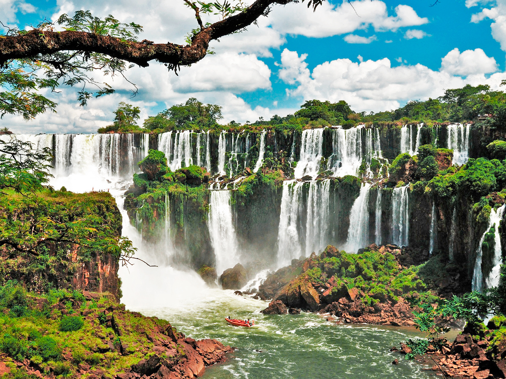
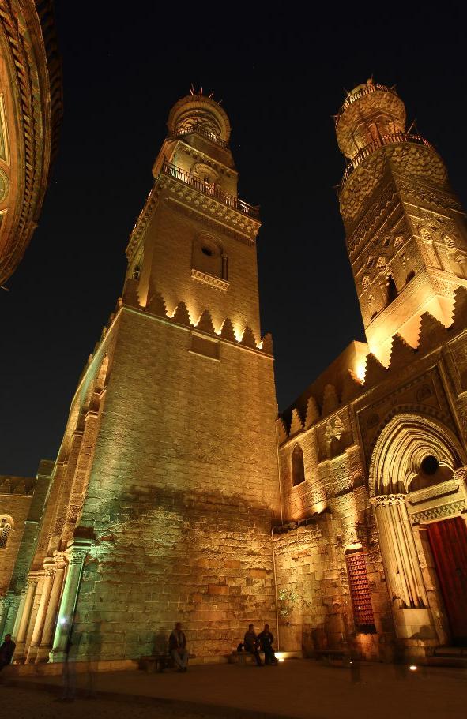

La isla Phi Phi, es una pequeña isla situada en el mar de Andamán, formada por acantilados de roca caliza y una belleza espectacular. En sus playas se han filmado películas como "la Playa" y "la isla de las cabezas cortadas".
La apertura occidental de Tailandia está presente en su dinamismo y diversidad de eventos y citas viajeras. Dos ejemplos perfectos de ello son el Concurso Internacional de Piano, que se celebra desde hace unos años durante una semana de noviembre en Nakhton Pathom, y que es la oportunidad perfecta para descubrir a los nuevos talentos del continente; y el Triathlon de Laguna, en Phuket, que es el más importante de Asia y se celebra también en noviembre.
La principal actividad recreativa en Holbox es la pesca deportiva, localizada en la zona norte de la Península de Yucatán, en la Reserva Ecológica de Yum Balam, es allí justamente donde hallamos uno de los hábitats más destacados para la pesca de sábalo, en todo el mundo. Es una isla de pequeñas dimensiones, con encantadoras playas de blanca arena, aguas de color de jade y un entorno poco conocido por el gran turismo. Los atractivos naturales que posee, hacen muy interesante a la Isla Holbox, y por ello, tanto los aficionados al ecoturismo como los amantes de la pesca, tienen en este lugar, la diversión asegurada.
En los bajos de los manglares de Isla Holbox, se pueden capturar valiosos ejemplares de robalo y sábalo, a lo largo de todo el año. Para el caso de la pesca tipo fly fishing, los peces migratorios que se hacen presentes en las aguas de Isla Holbox, son la razón por la cual este destino turístico ha destacado a nivel internacional, en especial para los aficionados a este deporte acuático. Durante el mes de abril, los peces migrantes principian a alimentarse en las claras aguas de los bajos, por lo cual, la mejor época del año para la pesca de esta clase de peces, en Isla Holbox, es en el periodo de junio a agosto. Quienes tengan pensado viajar a Isla Holbox, con el propósito de practicar la pesca deportiva, tienen en el Hotel Faro Viejo una excelente alternativa, puesto que allí se organizan emocionantes expediciones de pesca, bajo la orientación de guías expertos, altamente capacitados a nivel profesional, para la pesca y su didáctica.

Soy Argentina, apasionada por los viajes, las comidas y sobre todo los destinos exoticos. Me gusta compartir con ustedes mis experiencias y me encantaria que en mis redes me cuenten las suyas. Buen viaje